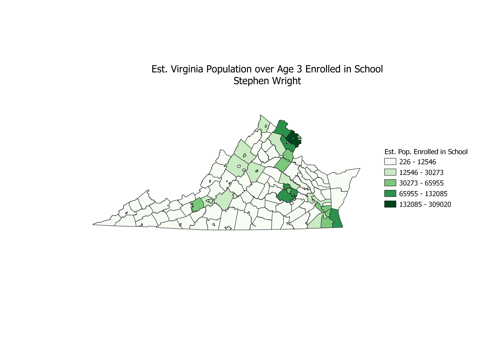

Homework 7: Census data choropleth
Stephen Wright
This map details the estimated population of Virginians over the age of 3 who are enrolled in school.
Notably, this map shows that in several of the independent cities, the counties surrounding them, and those counties along the northern border with the D.C. metropolitan area, enrollment is substantially higher.
In comparison, counties and cities in the west and south see much lower enrollment rates, with some exceptions once again regarding the independent cities.

Data used for this project
CSV dataset
Link to shapefile